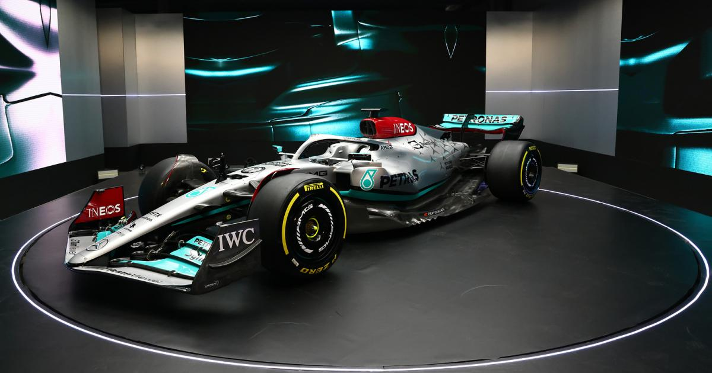
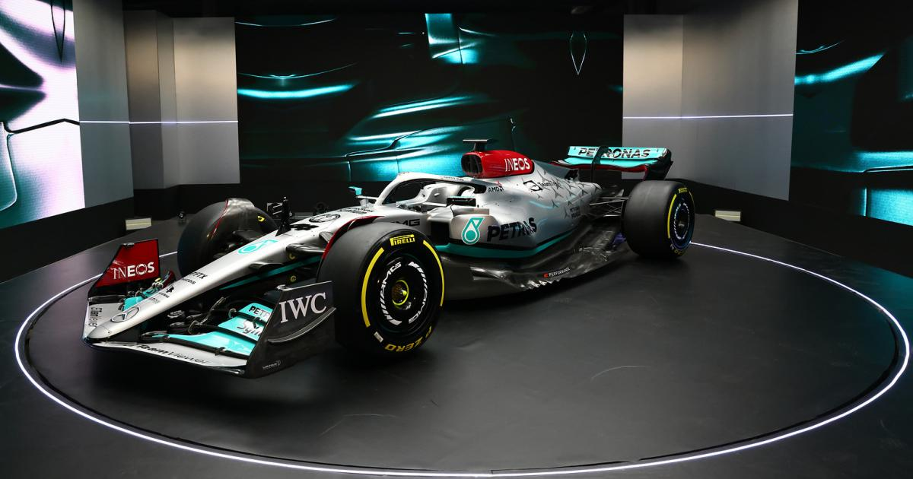
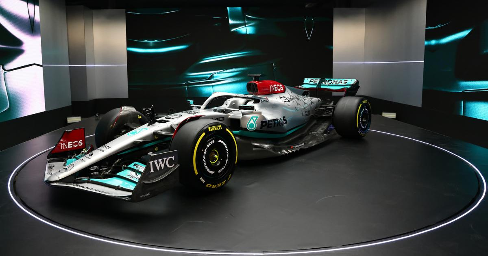

The 2022 F1 season started with high expectation and hopes of a closer grid, new cars new regulations and some new driver line ups. Mercedes came in with a radicl design which the car had practically zero sidepods, Ferrari on the other hand with considerably large sidepods which some compared them to fishtanks and other including Redbull had gone with more normal lookindg car(for the lack of better term).

Everyone was eager to see who could challenge Mex Verstappen the defending champion which some viewed controversial considering what happend at the last lap of the last race of 2021 season.
who could win the most prestigious trophy in motorsport?
There were rumours of Ferrari making a come back after two miserable and frustrating years for the Tifosi fans who watched The prancing horse not been able to win a single race and were hoping that their prodigy (Charles Leclerc) could take the fight to Max an Lewis and finally bring an end to Ferrari championship drought.
who was going to be triumphant in 2022 season? Max the defending champion? or Lewis who was looking to take revenge for 2021 season and win his 8th title and break the old time record? or could Charles wint the title and join the list of graet drivers who won the title with Ferrari and cement his name in the history of motorsport?